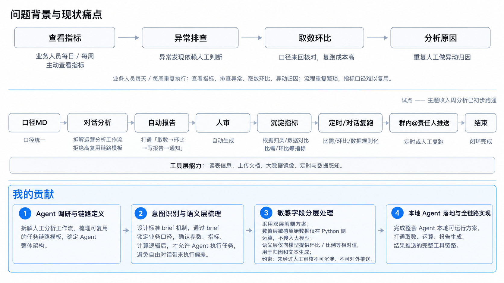

从重复分析到可复用流程
业务问题
指标波动排查需要反复核对口径、取数和计算，分析过程难以沉淀。
我的工作
梳理指标口径与分析链路，设计语义层映射、取数脱敏、自动计算与报告流程。
流程设计
自然语言提问 → 语义层映射 → 取数脱敏 → 自动计算 → AI 归因 → 报告生成。
验证边界
当前公开展示支持流程与编排思路说明；没有提供使用规模、上线状态或节省工时的量化证据。

OPPO · 实习案例
把自然语言提问、取数、计算和归因报告组织成连续流程。
指标波动排查需要反复核对口径、取数和计算，分析过程难以沉淀。
梳理指标口径与分析链路，设计语义层映射、取数脱敏、自动计算与报告流程。
自然语言提问 → 语义层映射 → 取数脱敏 → 自动计算 → AI 归因 → 报告生成。
当前公开展示支持流程与编排思路说明；没有提供使用规模、上线状态或节省工时的量化证据。
